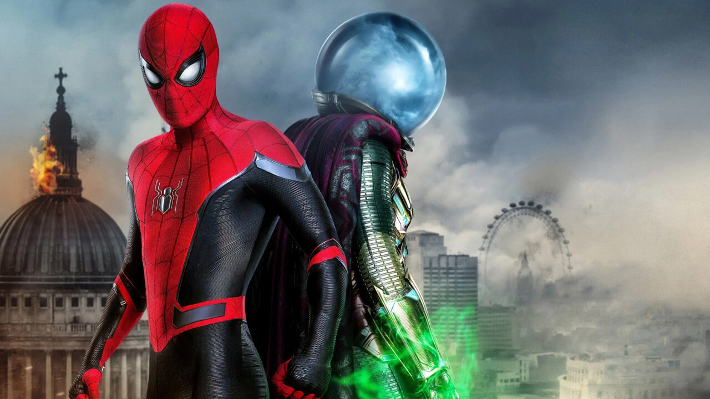

My Spy
JJ, a CIA operative, is tasked with spying on a single mother and her daughter with tenuous links to an arms dealer. But the young girl catches JJ forcing him to do her bidding or be exposed.
This is the first-ever review I have made. This movie made to do that. JJ has blown up with his Bomb like Structure and actually the BIg Bomb is the little devil Sophie. She is just awesome. Such a funny lovely action movie which makes you being LOL all over the movie... Love Laugh Live that's what I found in this movie with some spicy kicks and shots... Recommended movie to watch as family too.. -Sherly J
Bumblebee
During the Cybertron Civil War, Optimus Prime sends Autobot scout B-127 to Earth to form a base where they can regroup. Later, the scout befriends a girl named Charlie, who names him Bumblebee.
This film is the definition of redeeming a fallen franchise, after the atrocious last bayformers film (The Last Knight and the other sequels) this film showed us that there's still hope in having actual good live action TF films. Granted yes the over all premise of the movie is a somewhat rehash of older beloved classic films such as ET and The Iron Giant but considering that this was what Steven Spielberg always wanted to do with the start of a Transformers live action series I'll let it slide. It still does the whole "a boy and his dog" type of story pretty well with beautiful teary scenes, good soundtrack, and good character development. This is a film the Transformers fans such as myself have been waiting for and is also a film I can see movie lovers and families enjoying as well. Highly recommend watching you'll have a good time. - Dan200

Spider-Man: Far From Home
Peter Parker, the beloved superhero Spider-Man, faces four destructive elemental monsters while on holiday in Europe. Soon, he receives help from Mysterio, a fellow hero with mysterious origins.
Spiderman far from home is another thrill ride by Marvel after the Endgame. The movie is very engaging and holds u till the end. So far ,this is one of my favourite spiderman movie now becoz, this installment fixes most of the flaws that we had with previous installment such as better storyline , charcater development etc. The story of the movie is also great with many twist and turns but at certain points it becomes predictable but still never fails to amaze u. Throughout the film we also see spiderman's love and afffection to his loved ones. But in this film the Ned and Peter parker doesn't hangout that much like in previous one. Throughout the film we also see so many refrences to our beloved IRON MAN and a short cameo of him which also plays some role in the movie for the mysterio. The screenplay of the movie is amazing, filled with lots of humor, it is also the comedy type film that u will enjoy a lot. The villan Mysterio was also cool & interesting character. In this installment they also pushed the boundries of the action sequences for the spiderman which are mindblowing. The VFX, CGI and other effects are super on point and very refreshing to watch. In the movie there is also a action sequence where u can see doctor strange movie like effects that part is my personal favourite. Overall i could say "Spiderman Far From Home" is another SUPERHIT BLOCKBUSTER movie from marvel that is both entertaining & spectacular to watch. - Prathamesh Bhonkhade
Mrs Doubtfire
Daniel, a divorced actor, disguises himself as Mrs Doubtfire, an ageing female Scottish housekeeper, in order to work in his ex-wife's house and spend more time with his children.
Personally I don't normally really enjoy watching Robin Williams, but in this movie his performance is truly something to behold and rises to the level of classic. His complete and fully convincing transformation from a middle-aged American male to an English female senior citizen is simply astounding. His unique comedic abilities are on full entertaining display and he raises them all to their highest level without overdoing it or going overboard, and he also brilliantly handles some difficult and upsetting subject matter with truly heartfelt sensitivity; I found myself empathizing with the tragedy of his character. Memorable performances like these are what movies were truly made for; he has left our world a wonderful legacy. - Micheal Donian

The Simpsons Movie
Homer accidentally pollutes a lake of Springfield. When the town blames him for it, he decides to save the city and his family.
As a Simpsons Fan I was so impressed on how the Movie actually turned out to be. Homer basically causes havoc and threat to his family as He dumped that pig silo in the lake. and Basically had to Save him and his family to Go to Alaska and as EPA. I Loved the part when Bart skateboarded Butt naked and Homer had that pig with him Spider Pig part LOL!!! still cracks me up. and Maggie saved Homer and Bart when the EPA Guy voiced by Nemo's Dad from Finding Nemo was about to kill them. I will always love The Simpsons til the day I die! Came out back in 2007 still great to this day in 2020. - Miles Robinson
The Addams Family
The eccentric and macabre Addams family moves to a bland suburb in New Jersey. However, problems arise when their child, Wednesday, befriends the daughter of a reality show host.
For me the addams family films of the 90s was a big part of my childhood. So I was excited when I heard they were making a new one in animation. Personally I loved this new film. The humour in this film is brilliantly leveled for children and adults. Each charecter clearly had time spent on them to bring the classic style of the 1930s comics back to life in 2019. The plot is easy to follow and although the end might feel rushed it works. My 6 year old daughter come out of the cinema happy and with a new hero in Wednesday. I cant speak for others but this film is a brilliant family film and I look forward to a sequel in the future.- John and Lexi